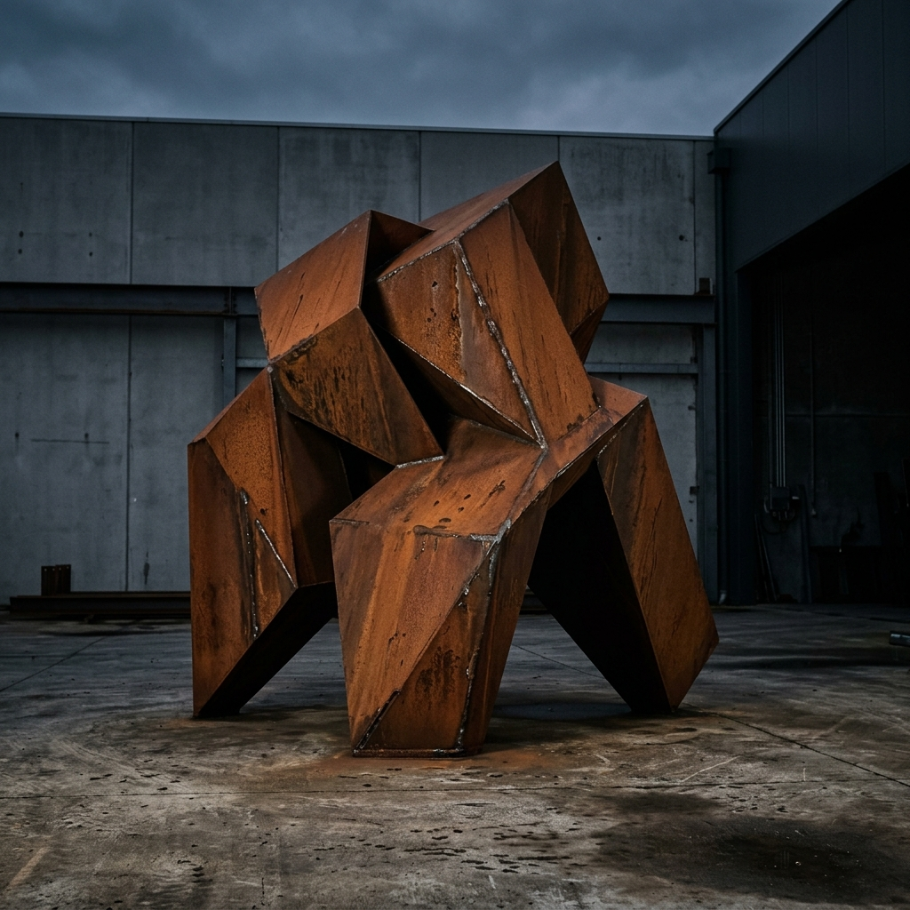

In the realm of large-scale sculpture, the biggest challenge isn't just the sheer weight of the metal, but the translation of a fluid, organic concept into a structurally sound reality. At Forge & Form, we bridge this gap using advanced 3D architectural modeling—processes usually reserved for skyscrapers and bridges—to ensure our artisan visions can withstand the tests of gravity and time.
Every curve we plasma-cut is the result of hundreds of simulations. When a sculpture stands forty feet tall, a fraction of a degree in the curvature of a steel plate can mean the difference between a masterpiece and a structural failure. We balance this rigor with manual hand-finishing, ensuring the industrial precision doesn't strip the work of its human touch.
The Modeling Workflow
Our process begins with high-fidelity digital twins. We simulate wind loads and seismic activity specific to the installation site. Once the model is perfected, it is decomposed into hundreds of interlocking components, each numbered and prepared for the plasma torch. This synergy between software and steel defines the modern era of industrial fine art.